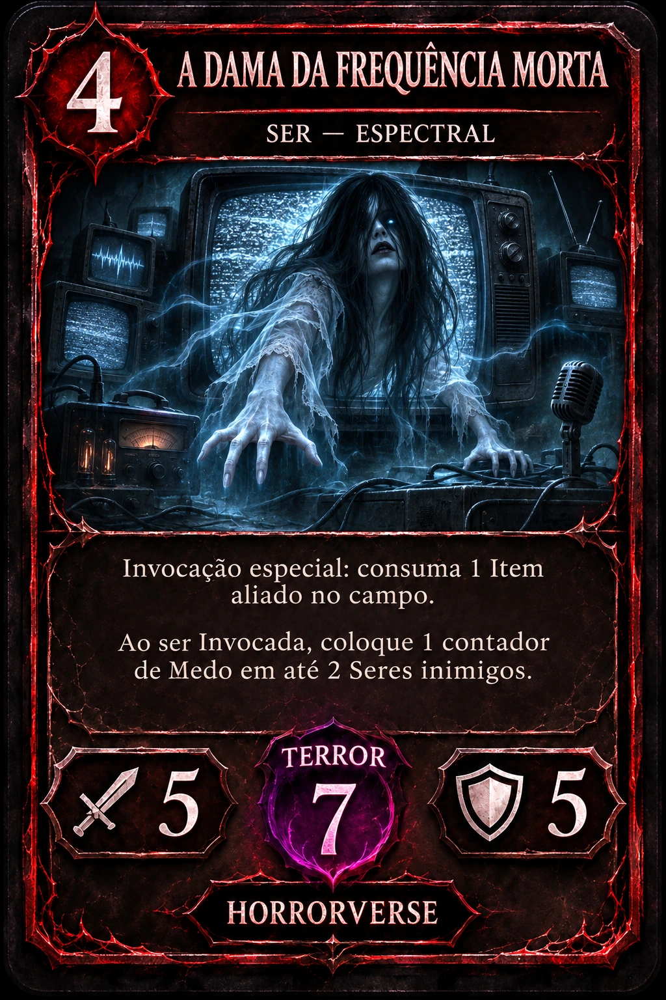
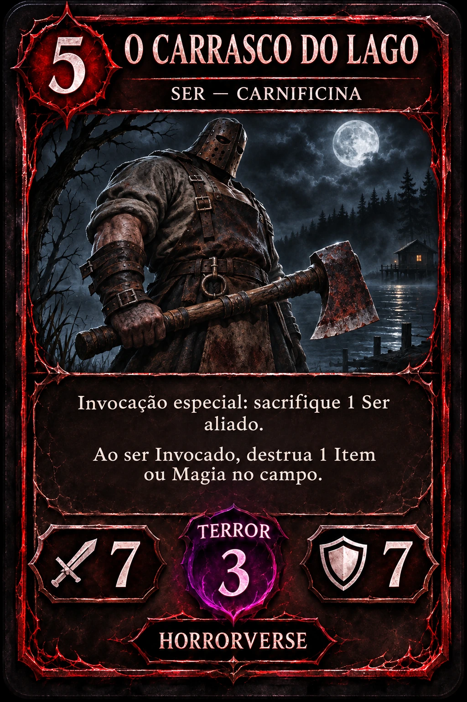

Invoque seus seres
Arraste uma carta para seu campo ou selecione a carta e clique numa posição. Você pode invocar 1 comum e 1 especial por turno. Especiais exigem materiais.
Invoque lendas. Prepare seus rituais.
Leve a sanidade do adversário ao limite.


LENDAS QUE NÃO MORREMTrês adversários, três maneiras de enfrentar o horror. Cada um tem seu próprio baralho de 30 cartas.
Seu baralho: 30 cartas. As dificuldades representam estilos e prioridades, sem cartas extras ou vantagens escondidas.
Convide alguém para a mesa. Cada jogador assume o controle no seu turno, compartilhando este computador.
Duelo local para duas pessoas compartilhando este computador.
Abra este site nos dois computadores da mesma rede. Um computador precisa estar executando o servidor Horrorverse 2.2.
O navegador pode pedir permissão para acessar a rede local. Autorize para conectar.
O servidor precisa autorizar o endereço deste site. Se o navegador bloquear a conexão, use o endereço HTTP local mostrado ao iniciar o servidor.
Suas preferências ficam salvas neste navegador.
Monte um baralho de 20 a 30 cartas, com até 2 cópias de cada. Você recebe 5 cartas e compra 1 no início de cada turno, inclusive no primeiro. Seres, itens e magias saem do mesmo monte.
Arraste uma carta para seu campo ou selecione a carta e clique numa posição. Você pode invocar 1 comum e 1 especial por turno. Especiais exigem materiais.
Itens e magias vão para a fileira de suporte. Selecione a carta no campo para ativá-la. Campos e reações permanecem preparados.
Selecione seu ser e escolha “Atacar”. O dano é ATK − DEF, descontado do TERROR. Cada ser ataca uma vez por turno.
Sem seres inimigos, ataque a sanidade: ATK 1–3 causa 1, 4–6 causa 2, 7–9 causa 3 e 10+ causa 4. Ataques diretos ficam bloqueados nos turnos 1 e 2. Vença por sanidade zero ou elimine todos os Seres do adversário, incluindo os que ainda estiverem na mão ou no monte. Baralhos sem Seres disputam por sanidade.